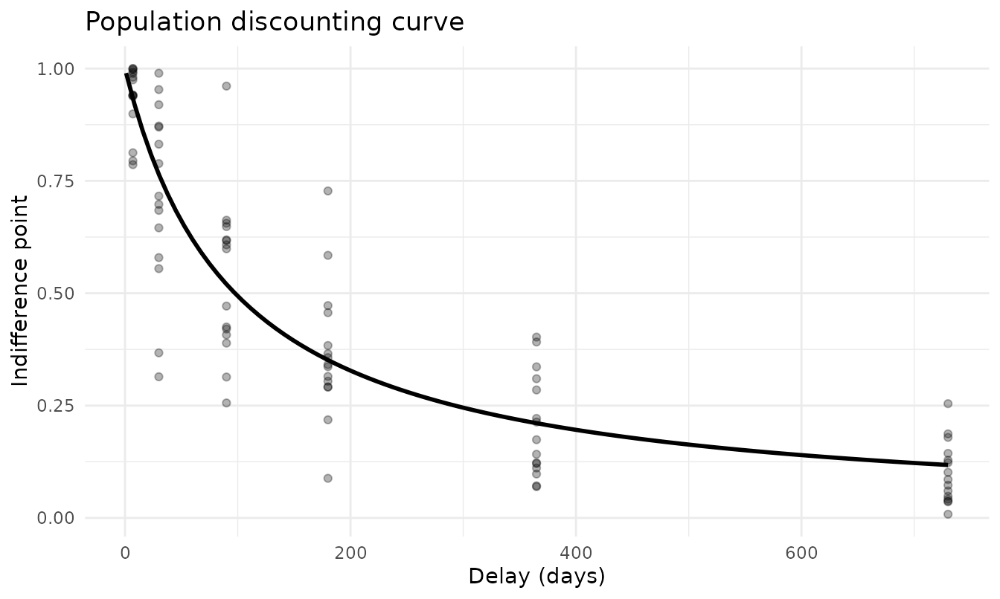
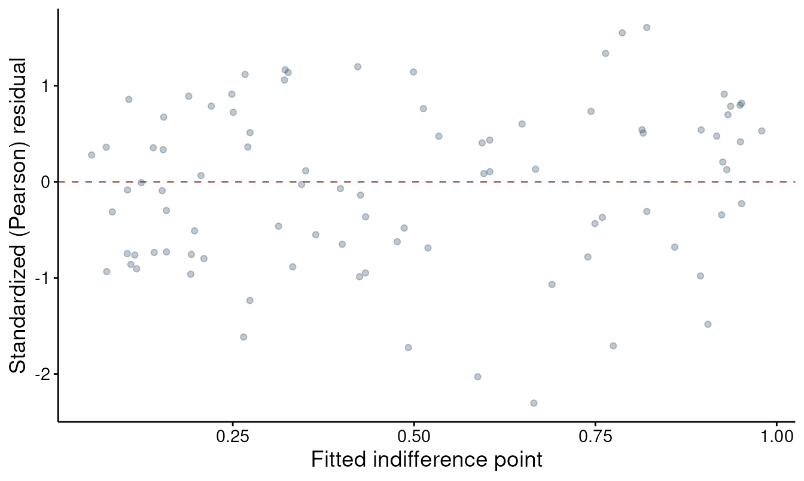

Mixed-effects discounting with TMB
Brent Kaplan
Source:vignettes/tmb-mixed-effects.Rmd
tmb-mixed-effects.RmdFitting each subject’s discounting curve in isolation ignores that
subjects are samples from a population. The mixed-effects tier in
beezdiscounting estimates a population discount rate and
each subject’s rate at the same time, borrowing strength across subjects
so that noisy individuals are pulled toward the group.
fit_dd_tmb() is the engine for that tier.
This vignette is a tour of the fit_dd_tmb() workflow and
the methods that act on a fitted model. It pairs with two other
vignettes: vignette("sltb-discounting") explains
why indifference points need a bounded error distribution and
develops the scale-location-truncated beta (SLT-beta) likelihood used
below, and vignette("dd-group-comparisons") goes deeper on
contrasting groups. Here the focus is the model object and what you can
do with it.
Why TMB
The discount rate is estimated on the natural-log scale, where the
log-k predictor is linear in the fixed effects, which makes each
subject’s rate
k_i = exp(population log-k + random deviation). Integrating
the random deviations out of the likelihood has no closed form. Template
Model Builder (TMB) handles it with a Laplace approximation and
automatic differentiation: exact gradients, a fast compiled objective,
and maximum-likelihood estimates in seconds rather than minutes. TMB
must be installed for any of this to run.
Some data
simulate_dd_ip() generates indifference-point data from
the same model fit_dd_tmb() fits, which makes it convenient
for a reproducible walk-through. The built-in dd_ip dataset
works exactly the same way.
sim <- simulate_dd_ip(
n_subjects = 15,
delays = c(7, 30, 90, 180, 365, 730),
log_k_pop = log(0.01),
sigma_u = 0.5,
phi = 10,
family = "sltb",
equation = "mazur",
seed = 1
)
head(sim)
#> # A tibble: 6 × 3
#> id x y
#> <fct> <dbl> <dbl>
#> 1 1 7 0.975
#> 2 1 30 0.870
#> 3 1 90 0.608
#> 4 1 180 0.291
#> 5 1 365 0.402
#> 6 1 730 0.187The data are long format with columns id, x
(delay), and y (indifference point on [0, 1]),
the same layout used throughout the package.
Fitting a model
A one-group hyperbolic model with a random intercept on log-k and the SLT-beta likelihood:
fit <- fit_dd_tmb(
sim,
equation = "mazur",
family = "sltb",
random_effects = k ~ 1
)
#> Fitting TMB mixed-effects discounting model (mazur, sltb)...
#> Subjects: 15, Observations: 90
#> Multi-start: best NLL = -87.54 (start set 2 of 3)
#> Converged (NLL = -87.54). Done.
fit
#>
#> TMB Mixed-Effects Discounting Model
#>
#> Call:
#> fit_dd_tmb(data = sim, equation = "mazur", family = "sltb", random_effects = k ~
#> 1)
#>
#> Equation: mazur
#> Family: sltb
#> Convergence: Yes
#> Number of subjects: 15
#> Number of observations: 90
#> Random effects: 1 (k ~ 1)
#> Log-likelihood: 87.54
#> AIC: -169.08
#>
#> Fixed Effects (log k):
#> k:(Intercept)
#> -4.5802
#>
#> Use summary() for full results.The random_effects = k ~ 1 formula puts a subject random
intercept on the discount rate. family = "sltb" selects the
bounded error distribution; use family = "gaussian" for
unbounded residuals.
Inspecting the fit
summary() reports the fixed effect (the population
k on the natural scale), the variance components, and fit
statistics:
summary(fit)
#>
#> TMB Mixed-Effects Discounting Model Summary
#> ==================================================
#>
#> Call:
#> fit_dd_tmb(data = sim, equation = "mazur", family = "sltb", random_effects = k ~
#> 1)
#>
#> Equation: mazur
#> Family: sltb
#> Backend: TMB_mixed
#> Convergence: Yes
#> Subjects: 15 Observations: 90
#>
#> --- Fixed Effects (k) ---
#> term estimate std.error statistic p.value
#> k:(Intercept) 0.0103 0.0016 -30.0245 <2e-16
#>
#> --- Variance Components ---
#> Component Estimate Scale
#> sigma_u (log10-k RE SD) 0.2287 log10
#> phi (precision) 12.3247 natural
#>
#> --- Fit Statistics ---
#> Log-likelihood: 87.54
#> AIC: -169.08 BIC: -161.58tidy() returns the same information as a data frame (one
row per term, with the scale each estimate is reported on), which is
handy for tables and for stacking models:
tidy(fit)
#> # A tibble: 3 × 8
#> term estimate std.error statistic p.value component estimate_scale
#> <chr> <dbl> <dbl> <dbl> <dbl> <chr> <chr>
#> 1 k:(Intercept) 0.0103 0.00156 -30.0 4.70e-198 fixed natural
#> 2 sigma_u (log… 0.229 NA NA NA variance log10
#> 3 phi (precisi… 12.3 NA NA NA variance natural
#> # ℹ 1 more variable: term_display <chr>glance() gives a one-row model summary for
comparisons:
glance(fit)
#> # A tibble: 1 × 11
#> model_class backend equation family nobs n_subjects n_random_effects
#> <chr> <chr> <chr> <chr> <int> <int> <int>
#> 1 beezdiscounting_tmb TMB_mix… mazur sltb 90 15 1
#> # ℹ 4 more variables: converged <lgl>, logLik <dbl>, AIC <dbl>, BIC <dbl>Subject-level rates
ranef() returns each subject’s random deviation
(u_i) and their fitted discount rate (k):
head(ranef(fit))
#> id u_i k
#> 1 1 -0.58783897 0.007523599
#> 2 10 0.15864424 0.011146530
#> 3 11 0.93521791 0.016777805
#> 4 12 0.05448851 0.010551646
#> 5 13 -0.65165654 0.007274969
#> 6 14 -2.33015497 0.003005893These are the shrinkage estimates: subjects with noisy or extreme data are pulled toward the population rate, more so when they have fewer or messier observations.
Predictions
predict() returns fitted indifference points. The
level argument chooses between the population-average curve
(random effects set to their mean) and subject-specific curves. Predict
the population curve on a fine grid of delays and plot it over the raw
points:
library(ggplot2)
grid <- data.frame(x = seq(1, 730, length.out = 100))
pop_curve <- predict(fit, newdata = grid, level = "population")
ggplot(sim, aes(x, y)) +
geom_point(alpha = 0.3) +
geom_line(data = pop_curve, aes(x, predict.fixed), linewidth = 1) +
labs(x = "Delay (days)", y = "Indifference point",
title = "Population discounting curve") +
theme_minimal()
For data that includes an id column, request both levels
at once with level = c("population", "subject") to get the
population prediction and each subject’s prediction side by side.
Diagnostics
augment() attaches fitted values and residuals to the
model frame, including standardized residuals that account for the
SLT-beta’s non-constant variance:
aug <- augment(fit)
head(aug)
#> # A tibble: 6 × 6
#> id x y .fitted .resid .std_resid
#> <chr> <dbl> <dbl> <dbl> <dbl> <dbl>
#> 1 1 7 0.975 0.950 0.0249 0.417
#> 2 1 30 0.870 0.816 0.0539 0.507
#> 3 1 90 0.608 0.596 0.0115 0.0852
#> 4 1 180 0.291 0.425 -0.134 -0.988
#> 5 1 365 0.402 0.267 0.135 1.12
#> 6 1 730 0.187 0.154 0.0331 0.334
ggplot(aug, aes(.fitted, .std_resid)) +
geom_point(alpha = 0.3) +
geom_hline(yintercept = 0, linetype = 2) +
labs(x = "Fitted indifference point", y = "Standardized residual") +
theme_minimal()
Choosing an equation
fit_dd_tmb() fits four discounting functions:
"mazur" and "exponential" (one-parameter), and
"green-myerson" and "rachlin" (two-parameter
hyperboloids that add a curvature exponent). Fit several and compare
them with glance():
equations <- c("mazur", "exponential", "green-myerson")
fits <- lapply(equations, function(eq)
fit_dd_tmb(sim, equation = eq, family = "sltb", random_effects = k ~ 1))
#> Fitting TMB mixed-effects discounting model (mazur, sltb)...
#> Subjects: 15, Observations: 90
#> Multi-start: best NLL = -87.54 (start set 2 of 3)
#> Converged (NLL = -87.54). Done.
#> Fitting TMB mixed-effects discounting model (exponential, sltb)...
#> Subjects: 15, Observations: 90
#> Multi-start: best NLL = -53.40 (start set 3 of 3)
#> Converged (NLL = -53.40). Done.
#> Fitting TMB mixed-effects discounting model (green-myerson, sltb)...
#> Subjects: 15, Observations: 90
#> Multi-start: best NLL = -87.54 (start set 3 of 3)
#> Converged (NLL = -87.54). Done.
do.call(rbind, lapply(fits, function(f) glance(f)[c("equation", "logLik", "AIC", "BIC")]))
#> # A tibble: 3 × 4
#> equation logLik AIC BIC
#> <chr> <dbl> <dbl> <dbl>
#> 1 mazur 87.5 -169. -162.
#> 2 exponential 53.4 -101. -93.3
#> 3 green-myerson 87.5 -167. -157.Because these data were generated from a hyperbola, Mazur wins on AIC; the exponential fits worse, and the extra parameter in Green-Myerson does not earn its keep. With real data the ranking is an empirical question worth checking.
Beyond one group and one random effect
Add between-subject factors with the factors argument,
then get per-group rates and contrasts. Simulate two groups and fit a
model with a condition effect on log-k:
sim2 <- simulate_dd_ip(
n_subjects = 30, delays = c(7, 30, 90, 180, 365, 730),
log_k_pop = log(0.01), sigma_u = 0.6, phi = 12,
family = "sltb", equation = "mazur",
n_conditions = 2, delta_k = c(0, log(2)), seed = 42
)
fit2 <- fit_dd_tmb(sim2, equation = "mazur", family = "sltb",
random_effects = k ~ 1, factors = "condition")
#> Fitting TMB mixed-effects discounting model (mazur, sltb)...
#> Subjects: 30, Observations: 180
#> Multi-start: best NLL = -163.16 (start set 1 of 3)
#> Converged (NLL = -163.16). Done.
get_dd_param_emms(fit2)
#> # A tibble: 2 × 6
#> level k k_log std.error conf.low conf.high
#> <chr> <dbl> <dbl> <dbl> <dbl> <dbl>
#> 1 condition=C1 0.0132 -4.33 0.188 0.00915 0.0191
#> 2 condition=C2 0.0176 -4.04 0.188 0.0122 0.0255get_dd_comparisons() turns those marginal means into
contrasts, reported both on the log10 scale and as multiplicative ratios
with Holm-adjusted p-values:
cmp <- get_dd_comparisons(fit2, compare_specs = ~ condition,
contrast_type = "pairwise", adjust = "holm")
cmp$k$contrasts_ratio
#> # A tibble: 1 × 5
#> contrast ratio conf.low conf.high p.value
#> <chr> <dbl> <dbl> <dbl> <dbl>
#> 1 condition=C1 - condition=C2 0.749 0.445 1.26 0.277See vignette("dd-group-comparisons") for the full
treatment of group inference.
The random-effects structure can grow too. With the SLT-beta family,
random_effects = k + phi ~ 1 adds a subject random effect
on the precision, letting each subject have their own spread around the
curve; the two-parameter equations support k + s ~ 1 for a
random curvature. The covariance_structure argument
controls whether those two random effects are allowed to correlate.
Practical notes
- TMB is required. The fitting functions load a compiled C++ template; if TMB is not installed, the calls fail.
-
Convergence.
fit_dd_tmb()runs a short multi-start by default and keeps the best fit that passes a sanity check. A returned model carries aconvergedflag; when standard errors cannot be computed, the uncertainty columns come backNA. -
Column names. Whatever you call your columns via
id_var,x_var, andy_var, the model frame and all method output use the canonicalid,x,y.
See also
-
vignette("sltb-discounting")for the SLT-beta error model and why bounded indifference points need it. -
vignette("dd-group-comparisons")for comparing discount rates between groups. -
vignette("delay-discounting-basics")for single-subject fitting,k, and AUC. -
vignette("bayesian-discounting")for the same models in a Bayesian framework.